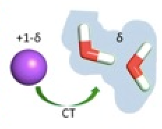
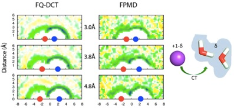
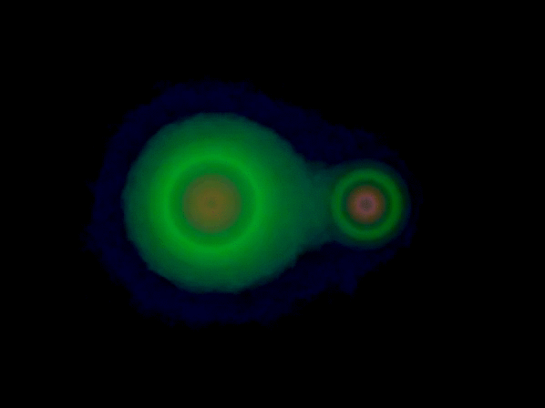
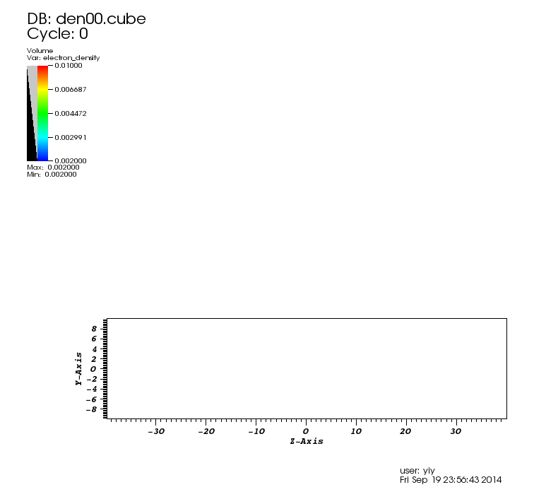

 Influence of charge transfer to water dynamics in solutions


By including the charge transfer in molecular dynamics simulation, we could accurately describe the water translational diffusive dynamics in aqueous solutions.
Role of Charge Transfer in Water Diffusivity in Aqueous Ionic Solutions
Y. Yao, Y. Kanai, M. L. Berkowitz
J. Phys. Chem. Lett., 5, 2711 (2014)
Communication: Modeling of Concentration Dependent Water Diffusivity in Ionic Solutions: Role of Intermolecular Charge Transfer
Y. Yao, M. L. Berkowitz, Y. Kanai
J. Chem. Phys. (Comm.) 143, 241101 (2015)

Applications of Quantum Monte Carlo
Reptation Quantum Monte Carlo Calculation of Charge Transfer: The Na-Cl Dimer
Y. Yao and Y. Kanai
Chem. Phys. Lett., 618, 236 (2015) - Frontiers Article

Diffusion quantum Monte Carlo study of martensitic phase transition energetics: The case of phosphorene
KG Reeves, Y Yao, Y Kanai
The Journal of Chemical Physics 145 (12), 124705
Excited state electron dynamics


KG Reeves, Y Yao, Y Kanai
Physical Review B 94 (4), 041108
Examining real-time time-dependent density functional theory nonequilibrium simulations for the calculation of electronic stopping power
Dillon C. Yost, Yi Yao, and Yosuke Kanai
Phys. Rev. B 96, 115134